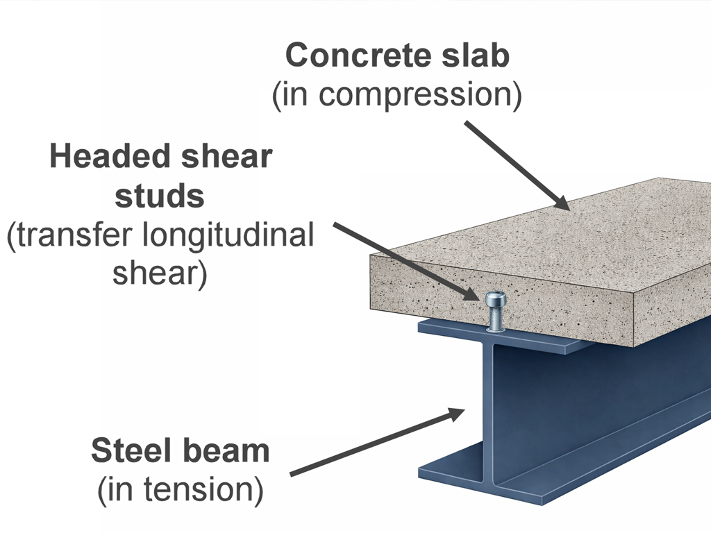
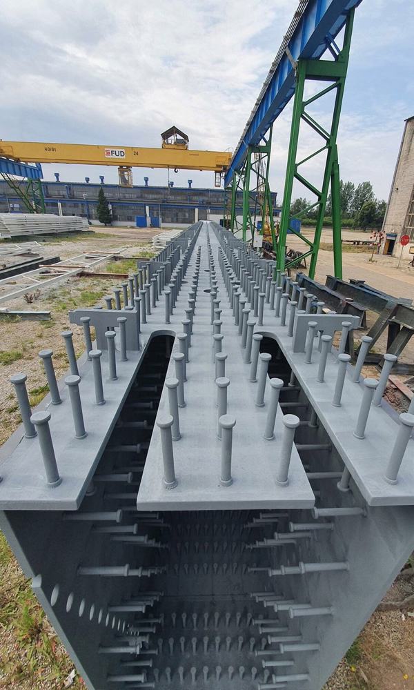
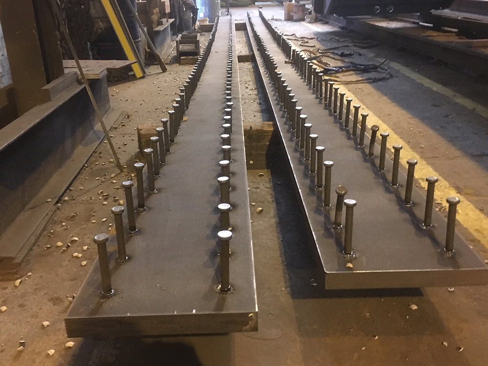
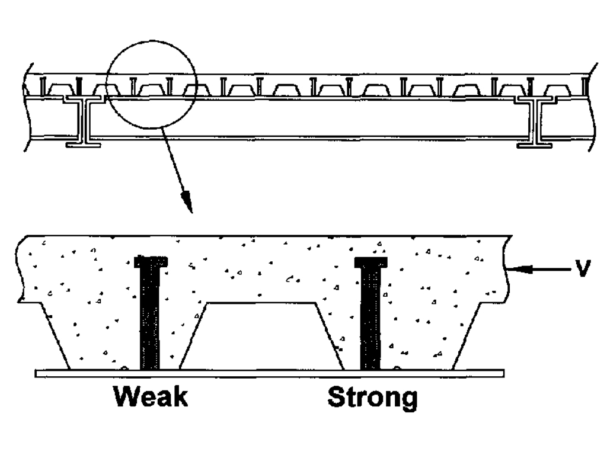
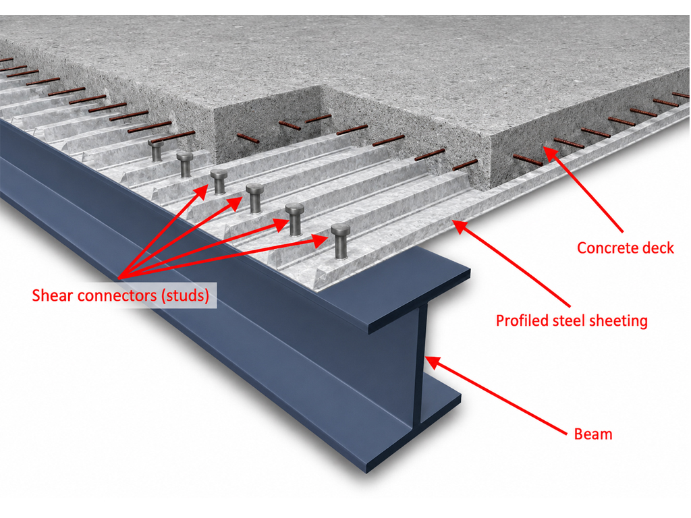
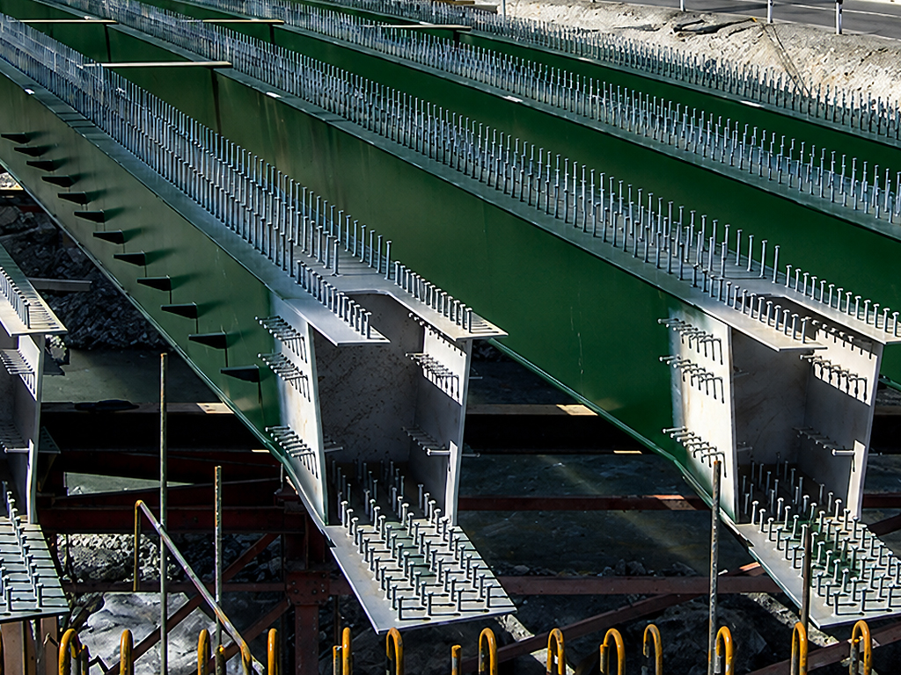

SHEAR STUDS
Shear studs are critical components in modern steel concrete composite construction. Their primary role is to mechanically connect a steel beam to the concrete slab cast on top of it, enabling both materials to act together structurally rather than as independent elements.
This interaction significantly increases the overall stiffness and strength of the beam/slab system.


COMPOSITE ACTION
In normal construction the steel beam carries the majority of the bending and shear forces.
The concrete slab contributes very little structurally because the two materials are not adequately connected. Under load, horizontal slip can occur at the steel–concrete interface, and uplift may develop at the edges of the slab.
Shear studs prevent this by providing a positive mechanical connection: the concrete grips the enlarged head of the stud, resisting slip through dowel action and bearing.
STUD FORM AND INSTALLATION
The studs themselves are typically mild steel rods with a forged head, welded through decking directly onto the top flange of the steel beam using capacitor-discharge or arc-stud welding.
Standard diameters range from 13 mm to 25 mm, with 19 mm being the most common. The height is usually dictated by design rules, with typical lengths between 75 mm and 125 mm depending on decking depth and cover requirements.
FORCE TRANSFER
When a composite beam is loaded in bending, the concrete slab resists the compressive forces while the steel beam flange resists tensile forces. Shear flow develops along the interface, and the shear studs transfer these forces.
In essence, they transform two separate materials into a single composite section with a much larger effective depth. This increases the beam’s moment capacity and reduces deflection—benefits that often allow slimmer steel sections to be used, saving both material and cost.

“In essence, they transform two separate materials into a single composite section with a much larger effective depth.”
DESIGN AND DECKING
Design standards such as Eurocode 4 and AASHTO provide methods for determining the required number and spacing of studs.
Their capacity depends on factors including stud diameter, concrete strength, and the presence of profiled metal decking.
Decking orientation is particularly important: when ribs run perpendicular to the beam, the concrete confinement improves stud behaviour but also introduces reduction factors because of the way concrete cracks around the ribs.

FIRE AND SITE QUALITY
In fire conditions, composite action can degrade as the concrete heats and loses strength; however, because studs are fully embedded, they generally maintain at least some shear capacity unless exposed by spalling.
Installation quality is crucial. Poor welding, misalignment, or insufficient embedment can reduce capacity significantly.
On site, studs are tested through bend-testing, where a selected sample is bent to around 30° to verify weld integrity without detaching.

WHY SHEAR STUDS MATTER
In summary, shear studs are small but essential elements in composite construction, enabling steel and concrete to work together efficiently.
Their correct design and installation can dramatically improve structural performance, reduce steel tonnage, enhance serviceability, and form the backbone of many modern floor and bridge systems.

ADVANTAGES
Creates Composite Action
Shear studs mechanically connect the steel beam to the concrete slab so the two act as a single composite unit, greatly increasing stiffness and strength.
Higher Load Capacity
Composite beams carry more bending moment than non-composite beams, allowing lighter steel sections to be used without reducing performance.
Reduced Deflection
By engaging the concrete slab in compression, shear studs significantly reduce beam deflections under service loads.
PERFORMANCE AND COST
Better Vibration and Dynamic Performance
The increased stiffness from composite action improves vibration behaviour, useful in floors, bridges, and long-span structures.
Cost Savings
Because composite beams can be smaller and lighter, use fewer materials, and allow shallower floor depths, overall project costs often decrease.

SPACING
Historically studs have been added in equal spacings. Hrabovska (2023) analysed the spacing requirements.
The results showed that span length and load intensity strongly influence the position where stud spacing should change, while material properties and section sizes have smaller effects.
The study also found that even beams normally designed using plastic methods can use elastic calculations to optimise stud layout under partial shear connection.
Studs placed more closely near the supports and more widely at mid-span give a more efficient design than uniform spacing. Although her research focused on beams under uniformly distributed loads, the same principles could be applied to other load types.